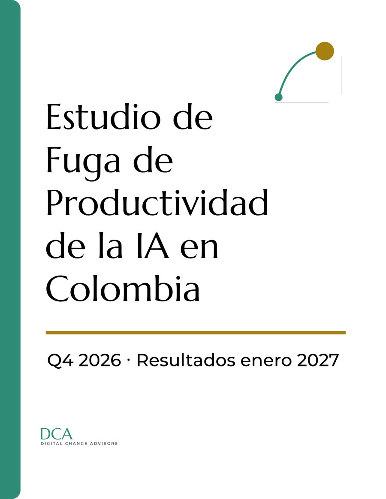

En agosto de 2026, Endeavor y Xertica midieron, sobre 493 profesionales de siete sectores en Colombia, que el 82% de las empresas percibe un impacto significativo de la inteligencia artificial. McKinsey, el mismo mes, sobre 1.719 ejecutivos en 97 países, encontró que menos de cuatro de cada diez lo ven reflejado en el EBIT de su empresa.
Tu empresa ya sabe qué tan adoptada está su IA. Todavía no sabe cuánto le cuesta la fuga de productividad que impide el retorno. Eso es lo que estamos midiendo.
Estamos levantando esa medición con un cupo de hasta 100 empresas colombianas con inversión activa en inteligencia artificial. No evaluamos herramientas ni proveedores: medimos si esa inversión está llegando al resultado del negocio.
Esto es lo que obtiene tu empresa
Quien no participa solo conocerá el promedio del país en enero de 2027 — sin su número, sin el corte de su sector y sin la conversación con el equipo del estudio.

El primer paso: cinco preguntas y tres minutos, y recibes una lectura inmediata de dónde está tu empresa.
Participar ahoraSin compromiso · Respuestas confidenciales · Resultados agregados por sector
Si tu empresa califica, el siguiente paso es el AI Return Test — el instrumento completo del estudio: 55 preguntas, menos de 30 minutos.
El plazo para participar cierra el 16 de octubre de 2026. Quienes participan reciben su resultado el 3 de noviembre — semanas antes de la publicación abierta en enero de 2027.